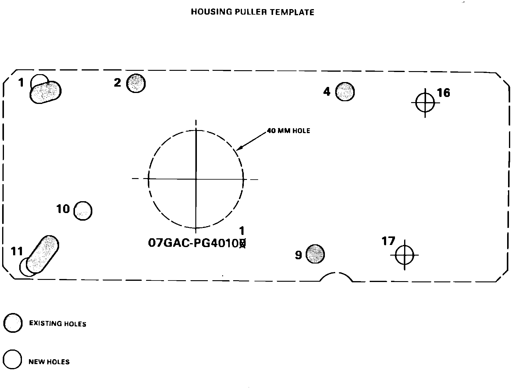

Housing Puller Modification
March 9, 1987BULLETIN NO. 87-003
YEAR 1987
MODEL LEGEND COUPE
APPLICATION AUTOMATIC TRANSMISSION
Housing Puller Modification
The purpose of this modification is to adapt the housing puller (T/N 07GAC-Pg40100) to the Legend Coupe automatic transmission housing.

1. Cut out the 40 mm hole along the dotted circle in the template.
2. Using an 8 mm hole punch, punch out holes number 2, 4, 9, and 10 as marked on the template. These holes will be used to reference the new holes.
3. Cut out the template along the dotted line and place it onto the housing puller. Align the four holes punched out in step 2. Attach the template to the housing puller tising four 8 x 12 mm bolts and nuts.
4. Center punch holes number 1, 11, 16, and 17 as marked on the template.
5. Drill holes marked 1, 11, 16, and 17 using an 8 mm drill hit. Holes number 1 and 11 may require the use of a rotary file. Chamfer the holes and remove any burrs from drilling.
6. Mark "16" and "17" beside the new holes on the housing puller using a punch or an engraver.
7. "X" out the last digit of the tool number on the housing puller and stamp "1" above it as shown, using a punch or an engraver.
NOTE:
If you are unable to modify our housing puller you may order a new, modified housing puller using T/N 07GAC-PG40101.